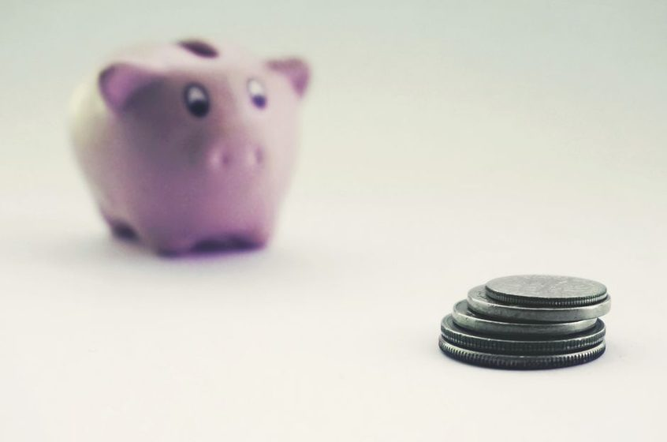

Reserva de emergência: quanto guardar primeiro quando o salário mal fecha a conta
Não é sobre guardar uma fortuna de uma vez — é sobre criar o primeiro colchão que evita uma dívida nova.

Se o seu salário costuma acabar antes do fim do mês, a ideia de "guardar uma reserva de emergência" pode soar como conselho de quem nunca precisou fazer malabarismo com boleto. Mas a lógica funciona ao contrário do que parece: quanto mais apertada a renda, mais a reserva importa — porque é ela que evita que um imprevisto pequeno (um pneu furado, um dente que dói, uma conta de luz mais alta) vire uma dívida nova no cartão ou um empréstimo com juro alto.
Este artigo não promete uma fórmula mágica nem valores fixos como garantia. A proposta é mais simples: um passo a passo que cabe em qualquer renda, começando pequeno e ajustando conforme o mês permite.
Por onde começar quando sobra pouco (ou nada)
O erro mais comum é tentar guardar um valor fixo "ideal" — algo como R$ 300 ou R$ 500 por mês — sem olhar pro que realmente sobra depois das contas essenciais. Quando o mês aperta, esse valor fixo vira meta impossível, gera frustração e a pessoa desiste na segunda tentativa.
Antes de definir quanto guardar, vale mapear rapidamente três coisas:
- Gasto essencial do mês — aluguel/financiamento, alimentação, transporte, contas de casa, remédio recorrente.
- Renda líquida — o que entra de fato, já descontado imposto e desconto em folha.
- Sobra real — o que fica depois do essencial, mesmo que seja pouco.
Se você já usa uma lógica de categorias pra organizar o salário, o texto sobre o método dos potes ajuda a enxergar essa sobra sem precisar de planilha complicada.
Guardar por percentual, não por valor fixo
A virada de chave que costuma funcionar melhor pra renda apertada ou variável (freelancer, autônomo, comissionado) é trocar o valor fixo por um percentual da sobra. Em vez de "vou guardar R$ 200 todo mês", a meta vira "vou guardar uma fatia do que sobrar, seja qual for o tamanho dessa sobra".
Uma reserva que se adapta ao mês bom e ao mês ruim tem muito mais chance de sobreviver do que uma meta fixa que trava sempre no mês difícil.
Na prática, isso costuma significar guardar entre 10% e 20% do que sobrar depois do essencial — nunca do salário bruto. Em mês bom, esse percentual gera mais dinheiro guardado. Em mês apertado, ele ainda gera algo, mesmo que pouco, e mantém o hábito vivo.
| Perfil de renda | Percentual sugerido da sobra | Frequência |
|---|---|---|
| Renda fixa, mês apertado | em torno de 10% | mensal |
| Renda fixa, com alguma folga | por volta de 15% a 20% | mensal |
| Renda variável (freela/comissão) | faixa de 10% a 25%, ajustando ao mês | a cada recebimento |
Essas faixas são aproximações educativas, não regra fechada — o ponto é ter um percentual que você consegue manter mesmo em mês ruim, em vez de um valor que só funciona no mês perfeito.
Onde guardar: liquidez diária acima de tudo
A reserva de emergência tem um único trabalho: estar disponível quando o imprevisto aparece. Por isso, o critério principal na hora de escolher onde guardar não é rendimento — é liquidez diária, ou seja, poder resgatar o dinheiro a qualquer momento sem perder valor nem esperar prazo de carência.
Aplicações com liquidez diária (alguns CDBs e fundos de renda fixa simples, por exemplo) costumam ser o formato mais indicado pra esse objetivo, porque combinam:
- Resgate rápido, sem trava de dias úteis;
- Rendimento que ao menos acompanha parte da inflação, em vez de deixar o dinheiro parado sem render nada;
- Baixo risco de perda do valor investido.
Vale separar essa reserva de qualquer aplicação com objetivo de crescimento no longo prazo. Quem quer entender melhor as opções de renda fixa pra guardar dinheiro com segurança pode conferir o comparativo entre Tesouro Direto e CDB para começar com pouco dinheiro — o portal oficial do Tesouro Direto detalha títulos e condições de resgate. E se a taxa básica de juros mexe no rendimento dessas aplicações, o texto sobre Selic no bolso explica o efeito prático disso no seu extrato.
A meta certa: meses de gasto essencial, não um número fechado
Em vez de mirar um valor absoluto como "preciso guardar R$ 10 mil", a forma mais realista de pensar a meta é em meses de gasto essencial coberto. Isso porque o que protege uma pessoa numa emergência não é o valor em si, mas quanto tempo esse valor sustenta as contas básicas se a renda parar ou cair.
Uma referência comum usada por quem estuda planejamento financeiro é buscar, aos poucos, cobrir de 3 a 6 meses de gasto essencial — sabendo que isso é um horizonte de médio prazo, não algo pra alcançar no primeiro trimestre. Quem tem renda mais instável (freelancer, comissionado, contrato temporário) tende a mirar a faixa mais alta desse intervalo; quem tem renda mais estável, a faixa mais baixa já costuma dar uma proteção razoável.
O caminho até lá pode ser fatiado:
- Primeira etapa: cobrir de 15 a 30 dias de gasto essencial — o colchão que evita recorrer ao cheque especial ou ao rotativo do cartão num aperto pontual.
- Segunda etapa: chegar perto de 1 a 2 meses de gasto essencial coberto.
- Terceira etapa: seguir crescendo até a faixa de 3 a 6 meses, no ritmo que a renda permitir.
Cada etapa concluída já reduz bastante o risco de dívida por imprevisto, mesmo antes de chegar na meta final.
Quando você precisa usar a reserva — e como recomeçar sem culpa
A reserva de emergência existir pra ser usada em emergência de verdade — não é fracasso gastar dela quando o imprevisto chega, é justamente o motivo dela existir. O problema não é usar a reserva; é o que acontece depois.
Pontos que ajudam a lidar com essa recaída sem travar o processo:
- Separe emergência de desejo: conserto de carro pra ir ao trabalho é emergência; uma promoção tentadora não é. Isso evita esvaziar a reserva por impulso.
- Recomece pelo percentual, não do zero emocional: voltar a guardar a mesma fatia da sobra, mesmo que o saldo tenha zerado, é mais sustentável do que tentar repor tudo de uma vez.
- Não puna o orçamento do mês seguinte: cortar tudo de uma vez pra "compensar" o uso da reserva costuma gerar um efeito sanfona que atrapalha mais do que ajuda.
- Revise o gatilho, não só o valor: se a mesma emergência se repete (carro velho quebrando toda hora, por exemplo), o problema pode estar em outro lugar do orçamento, não só na reserva.
Ter visibilidade de quando as contas vencem e de quanto entra em cada período do mês facilita muito esse recomeço — é justamente esse tipo de organização que a Régua de Contas ajuda a manter no dia a dia: você anota os vencimentos e vai enxergando o que sobra pra guardar.
No fim, a reserva de emergência não é sobre disciplina heroica nem sobre um número redondo na conta. É sobre criar, aos poucos, um espaço de segurança que impede que um imprevisto pequeno vire uma dívida grande. Comece pelo percentual que cabe na sua sobra real, guarde num lugar de liquidez diária, e trate qualquer recaída como parte do processo — não como motivo pra desistir.